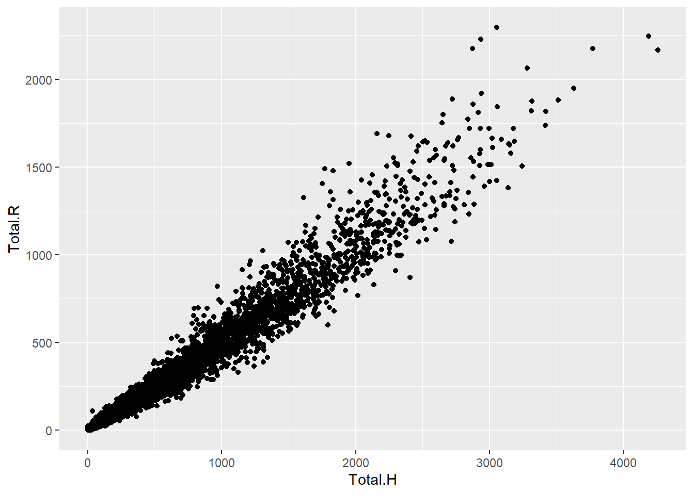
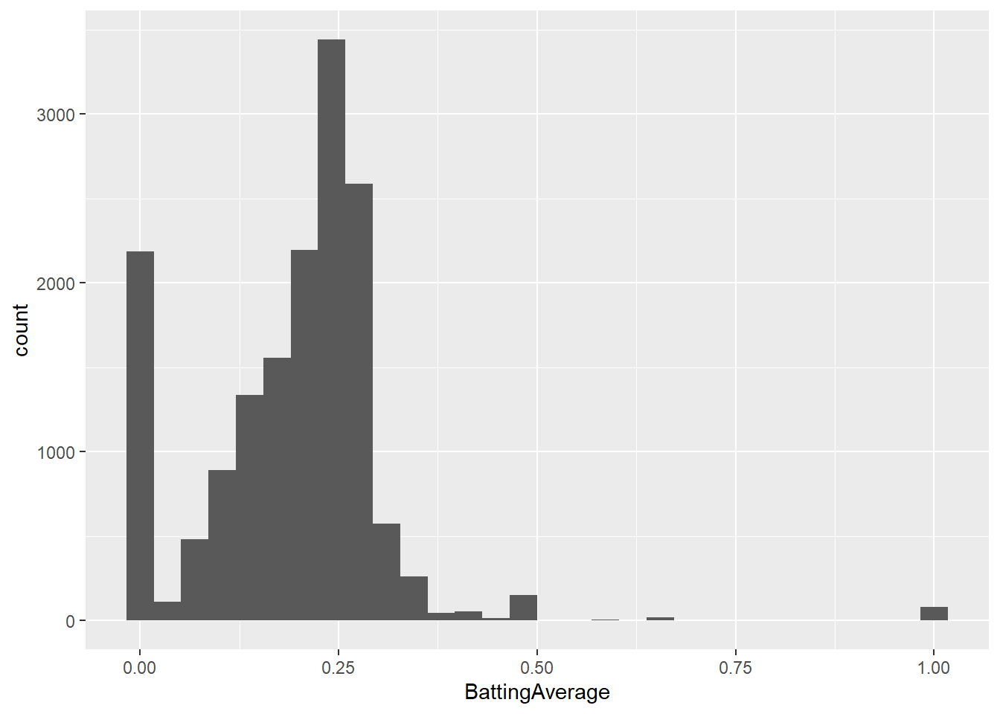
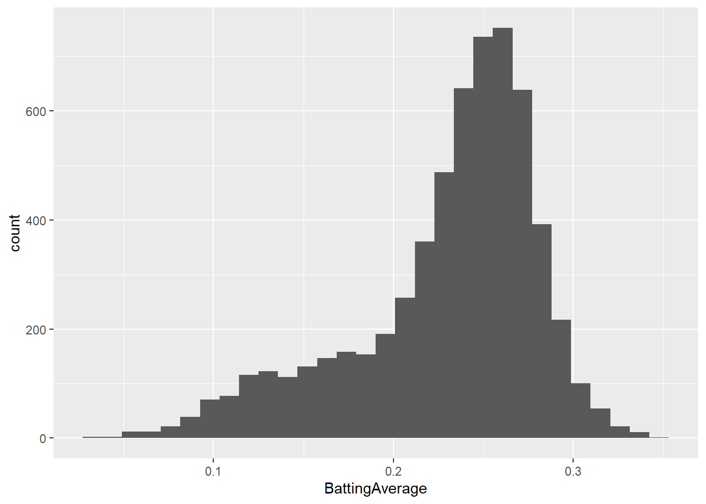
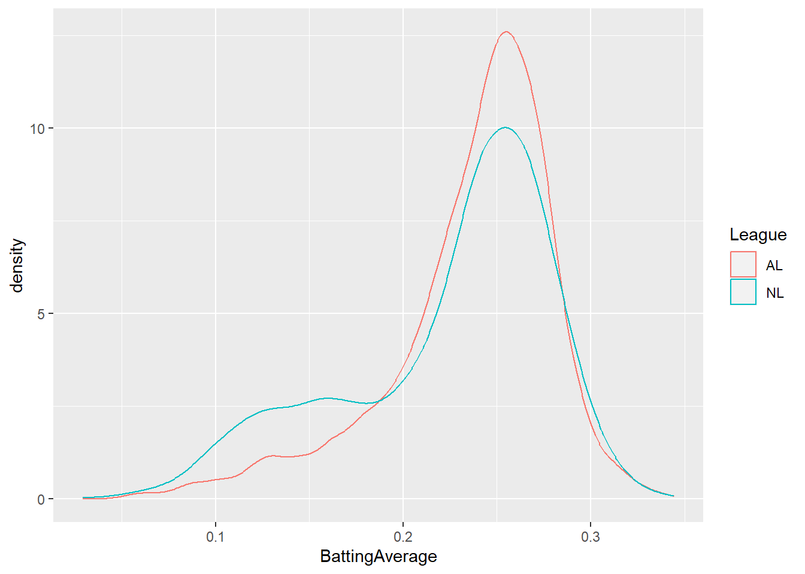
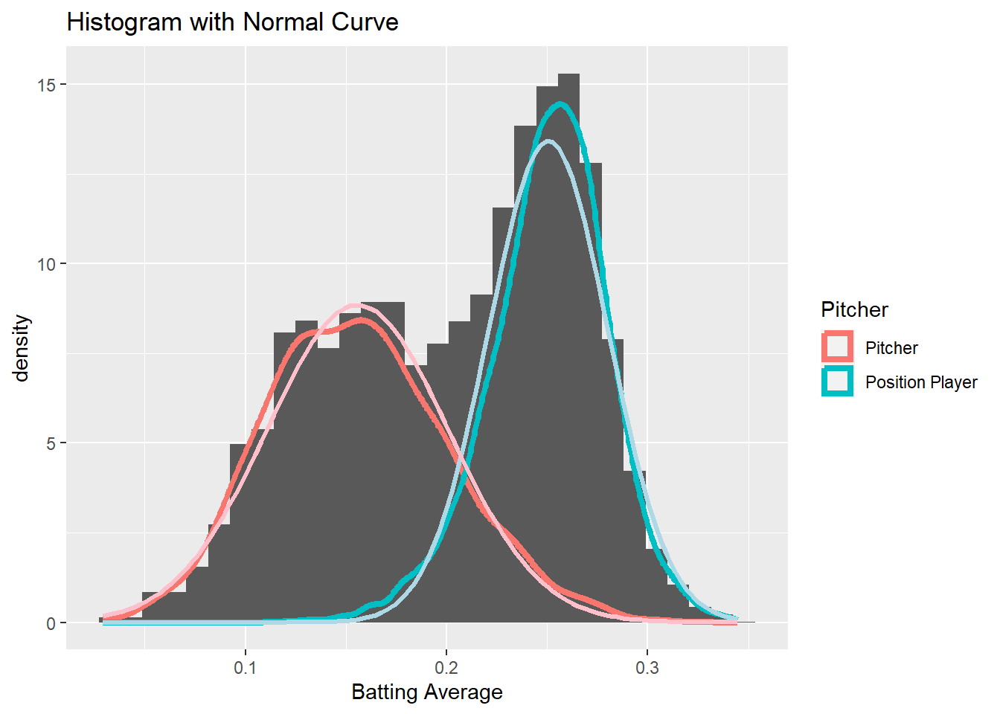
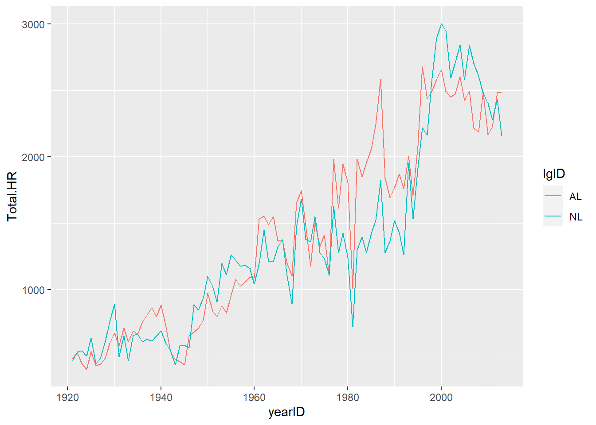
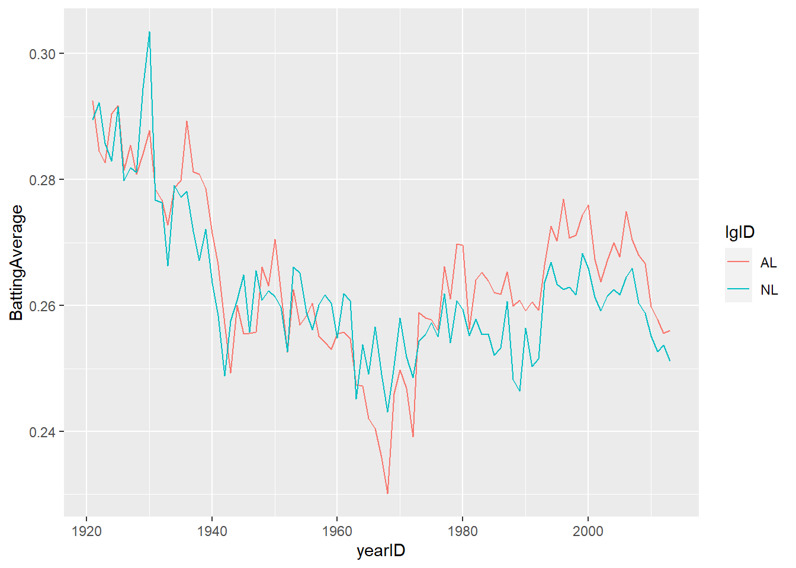
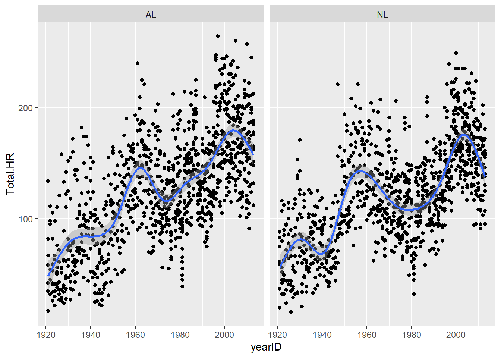
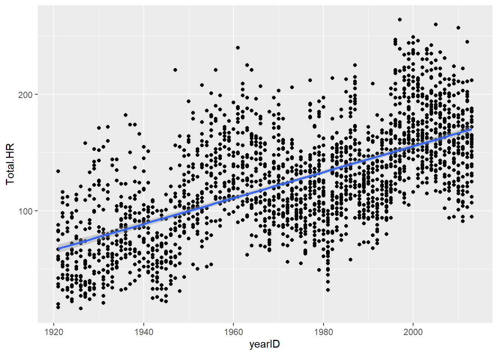
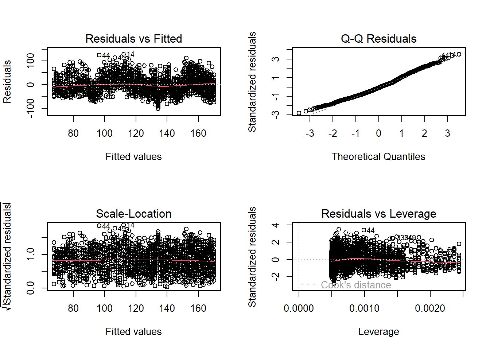

Click here to download the script! Save the script to the project directory you set up in the previous submodule.
Load your script in RStudio. To do this, open RStudio and click on the folder icon in the toolbar at the top to load your script.
Before we get into the basics, let’s just run through some of what R can do! Don’t worry if you don’t understand something- we will go over all of this in greater detail later!
To get started, let’s first load some R packages that help with data wrangling and exploration
Packages in the CRAN repository can be installed using the function “install.packages()”:
# R DEMO ----------------------
# don't worry if you don't understand this just yet- this is just a
# taste of where we are going!
# Install packages
# NOTE you only have to do this once. If you have not already installed the packages, you can uncomment and run the following lines:
# install.packages(c("ggplot2","tidyverse"))Alternatively, you can use the “packages” tab in Rstudio (lower right) and use the “install” button.
Once packages are installed, you can load them into your workspace (so they are useable in your R session) using the “library()” function:
# Load packages
library(ggplot2)
library(tidyverse)
library(Lahman) # for getting baseball dataNext we can load in some data. To give you a sense of what R can do, let’s load in some relatively complex datasets. These datasets happen to be about baseball, but they can stand in for any complex datasets you might encounter in your work!
# Read in data (from the web)
salaries <- read_csv("http://dgrtwo.github.io/pages/lahman/Salaries.csv")
master <- read_csv("http://dgrtwo.github.io/pages/lahman/Master.csv")
batting <- read_csv("http://dgrtwo.github.io/pages/lahman/Batting.csv")
# Read in data from package (you can read in all of these from the Lahman package!)
fielding <- tibble(Lahman::Fielding)Let’s examine these data objects in r. Again, we will get into this in more detail later!
# explore the data
salaries## # A tibble: 23,956 × 5
## yearID teamID lgID playerID salary
## <dbl> <chr> <chr> <chr> <dbl>
## 1 1985 BAL AL murraed02 1472819
## 2 1985 BAL AL lynnfr01 1090000
## 3 1985 BAL AL ripkeca01 800000
## 4 1985 BAL AL lacyle01 725000
## 5 1985 BAL AL flanami01 641667
## 6 1985 BAL AL boddimi01 625000
## 7 1985 BAL AL stewasa01 581250
## 8 1985 BAL AL martide01 560000
## 9 1985 BAL AL roeniga01 558333
## 10 1985 BAL AL mcgresc01 547143
## # ℹ 23,946 more rows# summary(salaries) # summary statistics for all variables in data frame
master## # A tibble: 18,354 × 24
## playerID birthYear birthMonth birthDay birthCountry birthState birthCity
## <chr> <dbl> <dbl> <dbl> <chr> <chr> <chr>
## 1 aardsda01 1981 12 27 USA CO Denver
## 2 aaronha01 1934 2 5 USA AL Mobile
## 3 aaronto01 1939 8 5 USA AL Mobile
## 4 aasedo01 1954 9 8 USA CA Orange
## 5 abadan01 1972 8 25 USA FL Palm Beach
## 6 abadfe01 1985 12 17 D.R. La Romana La Romana
## 7 abadijo01 1854 11 4 USA PA Philadelphia
## 8 abbated01 1877 4 15 USA PA Latrobe
## 9 abbeybe01 1869 11 11 USA VT Essex
## 10 abbeych01 1866 10 14 USA NE Falls City
## # ℹ 18,344 more rows
## # ℹ 17 more variables: deathYear <dbl>, deathMonth <dbl>, deathDay <dbl>,
## # deathCountry <chr>, deathState <chr>, deathCity <chr>, nameFirst <chr>,
## # nameLast <chr>, nameGiven <chr>, weight <dbl>, height <dbl>, bats <chr>,
## # throws <chr>, debut <date>, finalGame <date>, retroID <chr>, bbrefID <chr># summary(master)
batting## # A tibble: 97,889 × 24
## playerID yearID stint teamID lgID G G_batting AB R H `2B`
## <chr> <dbl> <dbl> <chr> <chr> <dbl> <dbl> <dbl> <dbl> <dbl> <dbl>
## 1 aardsda01 2004 1 SFN NL 11 11 0 0 0 0
## 2 aardsda01 2006 1 CHN NL 45 43 2 0 0 0
## 3 aardsda01 2007 1 CHA AL 25 2 0 0 0 0
## 4 aardsda01 2008 1 BOS AL 47 5 1 0 0 0
## 5 aardsda01 2009 1 SEA AL 73 3 0 0 0 0
## 6 aardsda01 2010 1 SEA AL 53 4 0 0 0 0
## 7 aardsda01 2012 1 NYA AL 1 NA NA NA NA NA
## 8 aaronha01 1954 1 ML1 NL 122 122 468 58 131 27
## 9 aaronha01 1955 1 ML1 NL 153 153 602 105 189 37
## 10 aaronha01 1956 1 ML1 NL 153 153 609 106 200 34
## # ℹ 97,879 more rows
## # ℹ 13 more variables: `3B` <dbl>, HR <dbl>, RBI <dbl>, SB <dbl>, CS <dbl>,
## # BB <dbl>, SO <dbl>, IBB <dbl>, HBP <dbl>, SH <dbl>, SF <dbl>, GIDP <dbl>,
## # G_old <dbl># summary(batting)
fielding## # A tibble: 149,365 × 18
## playerID yearID stint teamID lgID POS G GS InnOuts PO A
## <chr> <int> <int> <fct> <fct> <chr> <int> <int> <int> <int> <int>
## 1 abercda01 1871 1 TRO NA SS 1 1 24 1 3
## 2 addybo01 1871 1 RC1 NA 2B 22 22 606 67 72
## 3 addybo01 1871 1 RC1 NA SS 3 3 96 8 14
## 4 allisar01 1871 1 CL1 NA 2B 2 0 18 1 4
## 5 allisar01 1871 1 CL1 NA OF 29 29 729 51 3
## 6 allisdo01 1871 1 WS3 NA C 27 27 681 68 15
## 7 ansonca01 1871 1 RC1 NA 1B 1 0 15 7 0
## 8 ansonca01 1871 1 RC1 NA 2B 2 1 30 3 4
## 9 ansonca01 1871 1 RC1 NA 3B 20 19 555 38 52
## 10 ansonca01 1871 1 RC1 NA C 5 4 93 10 0
## # ℹ 149,355 more rows
## # ℹ 7 more variables: E <int>, DP <int>, PB <int>, WP <int>, SB <int>,
## # CS <int>, ZR <int># summary(fielding)Before we can do much with these data, we need to “wrangle” these data into a format that can be visualized and analyzed effectively.
Let’s begin by merging these datasets into a single master dataset…
# Do some wrangling!
# merge the batting and salaries data frames
merged.batting = left_join(batting, salaries, by=c("playerID", "yearID", "teamID", "lgID"))
# merge the "master" dataset (player biographical info)
merged.bio = inner_join(merged.batting, master, by="playerID")
# summarize fielding data by year and player- prepare to merge with other data
fielding.temp = fielding %>%
group_by(playerID,yearID,teamID,lgID) %>% #
summarize(position = first(modeest::mfv(POS)),
games = sum(G))
merged.all = inner_join(merged.bio,fielding.temp,by=c("playerID", "yearID", "teamID", "lgID"))
merged.all = merged.all %>% # remove all rows with no at-bats...
filter( AB > 0 )
# range(merged.all$AB)
merged.all = merged.all %>% # make a new column with the full name
mutate(name=paste(nameFirst, nameLast))Now let’s summarize the data by player and start to get a sense for what patterns we can detect.
# summarize by player
summarized.batters = merged.all %>%
group_by(playerID) %>%
summarise(name=first(name),
League=first(modeest::mfv(lgID)),
Position=first(modeest::mfv(position)),
First.yr=min(yearID),
Total.HR=sum(HR),
Total.R=sum(R),
Total.H=sum(H),
AB=sum(AB),
BattingAverage=sum(H) / sum(AB) ) %>%
arrange(desc(Total.HR))
# visualize the data
# visualize correlation between hits and runs
ggplot(summarized.batters, aes(Total.H, Total.R)) + geom_point()
# visualize histogram of batting average
ggplot(summarized.batters, aes(BattingAverage)) + geom_histogram()
# remove "outliers" and try again
summarized.batters = summarized.batters %>%
filter(AB>100&First.yr>1920)
ggplot(summarized.batters, aes(BattingAverage)) + geom_histogram()
ggplot(summarized.batters, aes(BattingAverage,col=League)) + geom_density()
# Why does NL density plot indicate a sizable number of players with very low batting average?
# make a new variable to indicate whether each player is a pitcher or position player
summarized.batters = summarized.batters %>%
mutate(Pitcher=ifelse(Position=="P","Pitcher","Position Player"))
ggplot(summarized.batters, aes(BattingAverage)) +
geom_histogram(aes(y = ..density..,group=Pitcher)) +
geom_density(aes(col=Pitcher),lwd=1.5) +
stat_function(
fun = dnorm,
args = with(summarized.batters, c(mean = mean(BattingAverage[Position!="P"]),
sd = sd(BattingAverage[Position!="P"]))),
col="lightblue",lwd=1.1
) +
stat_function(
fun = dnorm,
args = with(summarized.batters, c(mean = mean(BattingAverage[Position=="P"]),
sd = sd(BattingAverage[Position=="P"]))),
col="pink",lwd=1.1
) +
labs(x="Batting Average",title = "Histogram with Normal Curve") 
This time, let’s look for some time trends by summarizing by year.
# Summmarize by time (and league)
summarized.year = merged.all %>%
filter(yearID>1920) %>%
group_by(yearID,lgID) %>%
summarise(Total.HR=sum(HR),
Total.R=sum(R),
Total.H=sum(H),
AB=sum(AB),
BattingAverage=sum(H) / sum(AB) ) %>%
arrange(yearID, lgID)
summarized.year## # A tibble: 186 × 7
## # Groups: yearID [93]
## yearID lgID Total.HR Total.R Total.H AB BattingAverage
## <dbl> <chr> <dbl> <dbl> <dbl> <dbl> <dbl>
## 1 1921 AL 477 6290 12509 42762 0.293
## 2 1921 NL 460 5631 12266 42367 0.290
## 3 1922 AL 525 5863 12034 42292 0.285
## 4 1922 NL 530 6190 12576 43041 0.292
## 5 1923 AL 442 5884 11870 42002 0.283
## 6 1923 NL 538 5984 12346 43203 0.286
## 7 1924 AL 397 6132 12261 42215 0.290
## 8 1924 NL 498 5577 12004 42430 0.283
## 9 1925 AL 533 6397 12419 42567 0.292
## 10 1925 NL 636 6193 12492 42845 0.292
## # ℹ 176 more rows# visualize the data
# visualize trend in home runs
ggplot(summarized.year, aes(yearID, Total.HR, col=lgID)) +
geom_line()
# visualize trend in batting average
ggplot(summarized.year, aes(yearID, BattingAverage, col=lgID)) +
geom_line()
Finally let’s do some more complex visualizations and run some statistics…
# Summarize by time and team
summarized.teams.year = merged.all %>%
filter(yearID>1920) %>%
group_by(yearID,teamID) %>%
summarise(League = first(lgID),
Total.HR=sum(HR),
Total.R=sum(R),
Total.H=sum(H),
AB=sum(AB),
BattingAverage=sum(H) / sum(AB) ) %>%
arrange(desc(Total.HR))
summarized.teams.year## # A tibble: 2,026 × 8
## # Groups: yearID [93]
## yearID teamID League Total.HR Total.R Total.H AB BattingAverage
## <dbl> <chr> <chr> <dbl> <dbl> <dbl> <dbl> <dbl>
## 1 1997 SEA AL 264 924 1574 5614 0.280
## 2 2005 TEX AL 260 865 1528 5716 0.267
## 3 2010 TOR AL 257 755 1364 5495 0.248
## 4 2000 HOU NL 249 938 1547 5566 0.278
## 5 1996 BAL AL 247 913 1498 5459 0.274
## 6 2001 TEX AL 246 890 1566 5685 0.275
## 7 1996 SEA AL 245 993 1625 5663 0.287
## 8 2012 NYA AL 245 804 1462 5524 0.265
## 9 1999 SEA AL 244 859 1499 5572 0.269
## 10 2000 TOR AL 244 861 1562 5677 0.275
## # ℹ 2,016 more rows# visualize the data
# visualize correlation between home runs and year
ggplot(summarized.teams.year, aes(yearID, Total.HR)) +
geom_point(show.legend = FALSE) +
geom_smooth() +
facet_wrap('League')
Let’s run a statistical analysis to see if the increasing home run trend is “real”.
ggplot(summarized.teams.year,aes(yearID,Total.HR))+
geom_point() +
geom_smooth(method="lm")
model1 <- lm(Total.HR~yearID,summarized.teams.year) # linear regression analysis
summary(model1)##
## Call:
## lm(formula = Total.HR ~ yearID, data = summarized.teams.year)
##
## Residuals:
## Min 1Q Median 3Q Max
## -102.388 -26.357 -3.177 22.578 127.902
##
## Coefficients:
## Estimate Std. Error t value Pr(>|t|)
## (Intercept) -2.073e+03 6.058e+01 -34.23 <2e-16 ***
## yearID 1.114e+00 3.069e-02 36.31 <2e-16 ***
## ---
## Signif. codes: 0 '***' 0.001 '**' 0.01 '*' 0.05 '.' 0.1 ' ' 1
##
## Residual standard error: 36.61 on 2024 degrees of freedom
## Multiple R-squared: 0.3945, Adjusted R-squared: 0.3942
## F-statistic: 1318 on 1 and 2024 DF, p-value: < 2.2e-16Then we can perform some diagnostic tests to make sure the data meet the assumptions of the analysis:
# test key assumptions visually
layout(matrix(1:4,nrow=2,byrow=T)) # set up graphics window
plot(model1) # run diagnostic plots for our regression
With just minor changes to the above code, we could look at many additional questions!